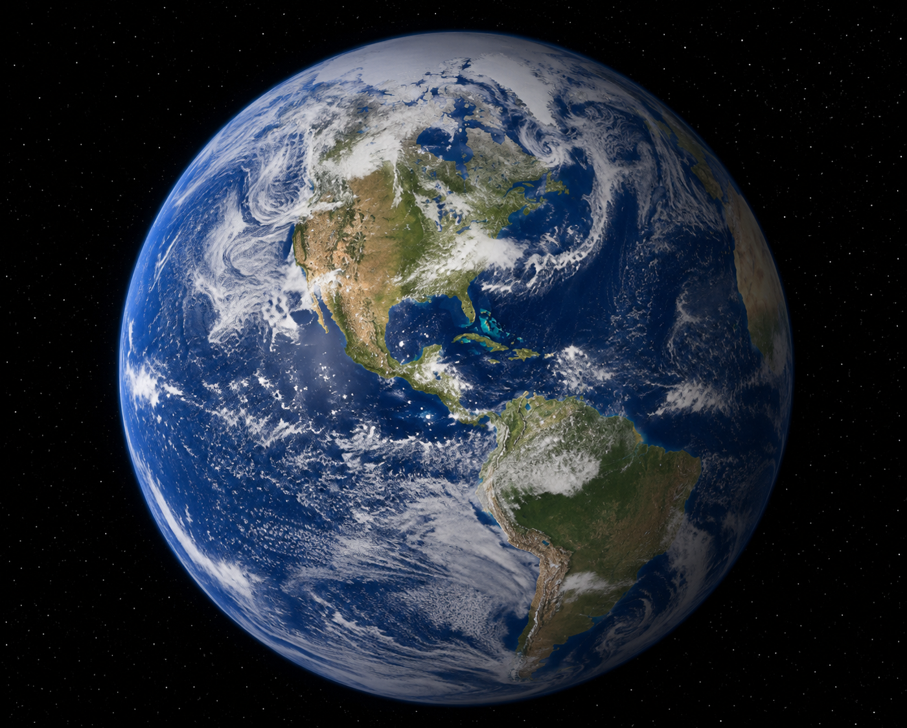

Our planet is the only known world that supports life, providing the air, water, and climate that living things need to survive. Earth is the third planet from the Sun and is home to diverse ecosystems found across every continent and ocean.
About 71 percent of Earth's surface is covered by water, while the remaining land is divided into seven continents. These continents vary greatly in size, climate, landscapes, and wildlife, making each region unique.
Earth is constantly changing through natural processes such as weather, erosion, volcanic activity, and plate tectonics. These forces shape mountains, valleys, coastlines, and other landforms over millions of years.
Scientists study Earth to better understand its environment and to help protect natural resources for future generations. Satellites, research stations, and space missions provide valuable information about our changing planet.
Exploring Earth helps us appreciate the incredible diversity of our world and reminds us of the importance of protecting the environment for people, animals, and future generations.

Earth's Continents
Learn more about our planet by visiting NASA Earth.
- Africa
- Antarctica
- Asia
- Europe
- North America
- Australia
- South America